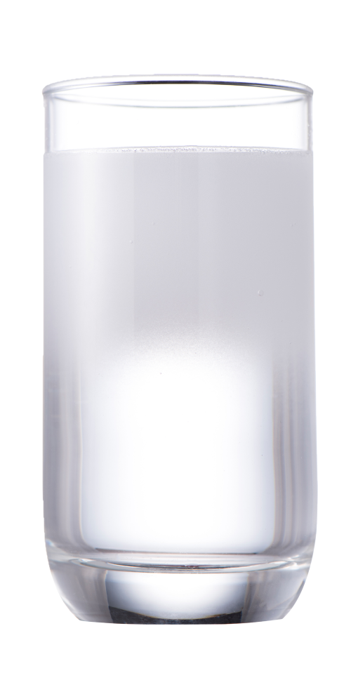

百氧水機BYW-20P

喝的實在，用的安心．
建議售價：$49,800
規格：寬 220 * 深 450 * 高 400 mm
溶氧量：20ppm
保固：1年
最大耗功率：29W
頻率：AC/50/60HZ
額定電壓：110/220V
耗材：氧氣瓶、濾心
| 配件 | 氧氣瓶 |
| 容量 | 0.5L |
| 尺寸(mm) | 直徑63 x 高293 |
| 重量 | 1 kg |
| 配件 | 4道濾心 |
| 功能 |
去除水中泥沙、懸浮物及雜質 吸附水中氯氣、異色/味，可調整口感。 去除水中病毒、細菌、重金屬、其他雜質。 吸附水中氯氣，異色/味。 |
| 配件 | 方型桶 |
| 使用方式 | 百氧水機配備有方桶，連接水機後可成為儲水槽，百氧水機會自動吸取製造高氧水。 |
喝出健康的水機！
高溶氧水機，氧氣水可直接生飲。適量取用，喝到最新鮮的高氧水。 外出可用密封瓶裝水，建議用小瓶裝。
複合式水機
集時尚、科技、養生、健康、環保的高氧水機。 兼具淨水與高氧功能，可連續出高氧水。
- 全球首創，將製造瓶裝高氧水機器小型迷你化、家庭化、提高氧氣瓶利用率，商品縮小化。
- 百氧生技的核心技術可以提高氧氣使用率，0.5公升的氧氣瓶就可製造1000公升以上的高氧水。
- 歐美日等國所銷售之瓶裝高氧水，每瓶售價高達約3美元，百氧生技能將每公升高氧水製造成本壓縮到0.1美元以下，製造成本低廉、環保又節能減碳。
- 可搭配自來水與可飲用的水。
百氧水機BYW-40P
{kind=link}
多喝水，多喝高氧水！
建議售價：$88,000
規格：寬 220 * 深 450 * 高 400 mm
溶氧量：40ppm
保固：1年
最大耗功率：29W
頻率：AC/50/60HZ
額定電壓：110/220V
耗材：氧氣瓶、濾心
| 配件 | 氧氣瓶 |
| 容量 | 0.5L |
| 尺寸(mm) | 直徑63 x 高293 |
| 重量 | 1 kg |
| 配件 | 4道濾心 |
| 功能 |
去除水中泥沙、懸浮物及雜質 吸附水中氯氣、異色/味，可調整口感。 去除水中病毒、細菌、重金屬、其他雜質。 吸附水中氯氣，異色/味。 |
| 配件 | 方型桶 |
| 使用方式 | 百氧水機配備有方桶，連接水機後可成為儲水槽，百氧水機會自動吸取製造高氧水。 |
喝出健康的水機！
高溶氧水機，氧氣水可直接生飲。適量取用，喝到最新鮮的高氧水。 外出可用密封瓶裝水，建議用小瓶裝。
複合式水機
集時尚、科技、養生、健康、環保的高氧水機。 兼具淨水與高氧功能，可連續出高氧水。
- 全球首創，將製造瓶裝高氧水機器小型迷你化、家庭化、提高氧氣瓶利用率，商品縮小化。
- 百氧生技的核心技術可以提高氧氣使用率，0.5公升的氧氣瓶就可製造1000公升以上的高氧水。
- 歐美日等國所銷售之瓶裝高氧水，每瓶售價高達約3美元，百氧生技能將每公升高氧水製造成本壓縮到0.1美元以下，製造成本低廉、環保又節能減碳。
- 可搭配自來水與可飲用的水。
百氧水機BYW-120P
{kind=link}
不只喝好水，更要喝健康好水！
外出可用密封瓶裝水，建議用小瓶裝。
建議售價：$288,000
規格：寬 400 * 深 426 * 高 633 mm
溶氧量：120ppm
保固：1年
最大耗功率：35W
頻率：AC/50/60HZ
額定電壓：110/220V
耗材：氧氣瓶
規格：寬 400 * 深 426 * 高 633 mm
溶氧量：120ppm
保固：1年
最大耗功率：35W
頻率：AC/50/60HZ
額定電壓：110/220V
耗材：氧氣瓶
| 配件 | 氧氣瓶 |
| 容量 | 0.5L |
| 尺寸(mm) | 直徑63 x 高293 |
| 重量 | 1 kg |
全球首創，小型化高氧水製造機
百氧生物的專利技術，縮小水機體積，提高氧氣利用率，0.5公升的氧氣瓶可製造1000公升以上的高氧水，能給一般家庭使用6個月以上，有效解決傳統氧氣瓶過大的問題。
口感獨特，喝了還想再喝！
出水氣泡極為細緻濃郁，宛如牛奶狀，飲用時有一些氣泡口感，及時飲用、效果最佳！
可搭配家中過濾水或桶裝水
適用於可生飲的水，喝水補氧，飯後用高氧水漱口常保口腔健康！
時尚環保
歐美日等國所銷售之瓶裝高氧水，每瓶售價高達約3美元，百氧生技能將每公升高氧水製造成本壓縮到0.1美元以下，製造成本低廉、環保又節能減碳。

高氧噴霧罐-玫瑰
建議售價：$1,200{kind=link}
內 容 量：150ml
保存期限：印製瓶身或底部，詳見包裝上
保存方法：放置陰涼乾燥處，避免陽光直射
注意事項：
- 使用時請遠離火源處
- 本產品因環境與個人使用習慣，使用後若有少部分水殘留瓶罐，屬正常現象，請安心使用。
- 微量元素
- 高壓氧 (PH7.0 Sterile Water 100ppm Natural High Oxygen)
-
適用任何肌膚、臉部、頸部、身體其他部位
戶外高溫炎熱-舒緩受損的皮膚
室內冷氣房-達到皮膚鎖水的功能
早晨潔面會晚上卸妝-可當作爽膚水使用
- 以皮膚約五公分的距離，按壓噴頭，噴於肌膚上，再以輕拍的方式約十秒，讓肌膚鎖水及達到高效能的功能
- 增添玫瑰香氣，讓健康芬芳迷人!
蘊含豐富百分百的氧氣量，可補充增強皮膚受損的地方，促進肌膚新陳代謝，加速細胞生成，淘汰掉老廢的角質細胞，讓肌膚達到高效能的保濕，回到嬰兒般的肌膚。
高氧噴霧罐-純水
建議售價：$1,000{kind=link}
內 容 量：150ml
保存期限：印製瓶身或底部，詳見包裝上
保存方法：放置陰涼乾燥處，避免陽光直射
注意事項：
- 使用時請遠離火源處
- 本產品因環境與個人使用習慣，使用後若有少部分水殘留瓶罐，屬正常現象，請安心使用。
- 微量元素
- 高壓氧 (PH7.0 Sterile Water 100ppm Natural High Oxygen)
-
適用任何肌膚、臉部、頸部、身體其他部位
戶外高溫炎熱-舒緩受損的皮膚
室內冷氣房-達到皮膚鎖水的功能
早晨潔面會晚上卸妝-可當作爽膚水使用
- 以皮膚約五公分的距離，按壓噴頭，噴於肌膚上，再以輕拍的方式約十秒，讓肌膚鎖水及達到高效能的功能
- 提神良品，無毒無害，透明清爽一瓶搞定!
蘊含豐富百分百的氧氣量，可補充增強皮膚受損的地方，促進肌膚新陳代謝，加速細胞生成，淘汰掉老廢的角質細胞，讓肌膚達到高效能的保濕，回到嬰兒般的肌膚。